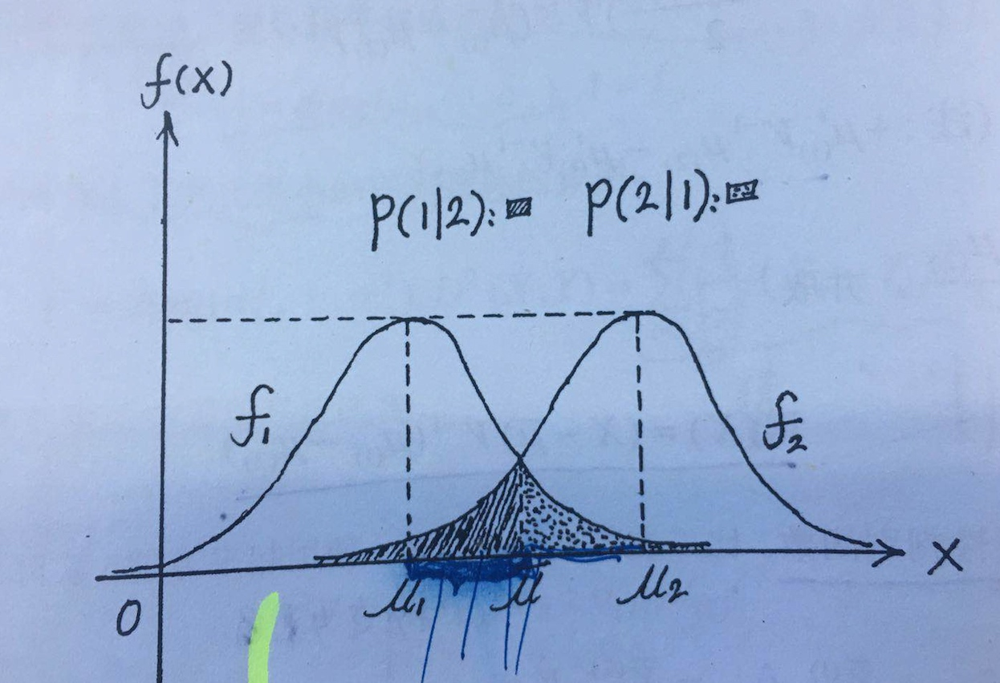

4.2 回归与分类
统计模型一开始是从回归分析开始的，但是实际问题中更加普遍的是分类问题。那么很自然的一个问题是，如果利用回归分析的方法的话，如何去做分类问题呢？换句话说回归和分类之间的联系在哪里呢？
一个很自然的想法是，根据回归分析y的结果，按照一定规则将其映射到不同的区间段，从而形成一个分类模型。即连续变量 => 分类变量
1. 硬输出——判别分析
直接根据阈值划分分类结果， 而这个映射函数即为判别函数。比较典型的就是判别分析了。常用的判别分析的方法：
距离判别法
即按照样本距离各个总体距离的远近来判断所属的归类。比如基于欧式距离或马氏距离，欧式距离没有考虑到本身特征量纲的差异，所以用的不多。这里以马氏距离，两个类别为例。
例子：已知一个样本X可能来自两个总体\(G_1\)和\(G_2\)其中的一个，其中 \(G_1: \mu_1,V_1, G_2:\mu_2, V_2\), 现在给定X，判断其属于哪一类。
注意：对总体分布没有要求
解析：判别函数\(W(X)=D^2(X,G_2)-D^2(X,G_1)=(X-\mu_2)V_2^{-1}(X-\mu_2)-(X-\mu_1)V_1^{-1}(X-\mu_1)\).
在实际中因为总体均值和方差是位置的，需要用样本进行估计。当\(V_1=V_2=V\)时候，二次判别式可以变成线性的，有\(W(X) = (X-\bar\mu)V^{-1}(\mu_1-\mu_2)\)， 其中\(\bar\mu = (\mu_1+\mu_2)/2\)
误判概率：判别分析肯定也有出错的时候，下面来讨论下误判概率问题。

从上图中可以比较清楚的看到，出错的概率即为图中阴影部分的面积。
假设X属于1，下面计算其被判断成2的概率即P(2|1)=P(W(X)<0).
令\(\lambda=(\mu_1-\mu_2)'V^{-1}(\mu_1-\mu_2)\). 因为\(W(X) = (X-\bar\mu)V^{-1}(\mu_1-\mu_2)\)， 所以可以计算出
\(E(W(X))=(\mu_1-\bar\mu)V^{-1}(\mu_1-\mu_2)=\lambda/2\)
\(D(X)=(\mu_1-\mu_2)'V^{-1}(\mu_1-\mu_2)=\lambda\)
在X服从正态分布的假定下，有\(W(X)~N(\lambda/2, \lambda)\)，从而可以计算出\(P(2|1)\)与\(P(1|2)\)
贝叶斯判别法
前面说的距离判别法因为形式简单，计算简便应用比较广。但是没有考虑到各个总体出现的可能性/概率大小，以及误判之后造成的不同损失大小。而贝叶斯判别法就是考虑这两点的一种判别方法。
这里只对其建模过程做个简述。
建模：假设m个类别，每个的先验概率和密度函数是 \(q_i, f_i(x)\), 而将原本属于类别i的判给类别j时候造成的损失，记为\(C(j|i)=\)， 而误判的概率可以写成\(p(j|i,R)=\int_{R_j}f_i(x)dx\)。 因此划分规则R最终带来的损失是
\[g(R)=\sum^m_1 q_i r(i,R)=\sum_1^m q_i\sum_{j=1}^m C(j|i)p(j|i,R)\]
Fisher判别法
fisher 判别法出发点和前面两个略有不同，是从投影/降维角度(将多元转为一元)来进行的。以两类为例：假定训练数据分为两个类别C1和C2,每个类别的均值分别是\(u_1\)和\(u_2\),如前所述经过\(y=W^TX+b\)投影后，最终的目标是希望类内的距离尽量小，类间的距离尽量大
类内距离：\(s_k=\sum_{x_i\in C_k}(w^Tx_i-w^Tu_k)^2 k=1,2\)
类间聚类：\((w^Tu_1 - w^Tu_2)^2\)
因此最终是最大化这个目标函数\(J(W)=\frac{(w^Tu_1 - w^Tu_2)^2}{s_1^2+s_2^2}\)，为了保证\(W\)的唯一性，不妨设\(W'S_WW=1\)
\[MAX J(W)=\frac{W^TS_BW}{W^TS_WW}\]
\[st. W'S_WW=1 \]
这里简单推导一下求解过程，令
\[L(W;\lambda)=W'S_BW-\lambda(W'S_WW -1) \]
\[\frac{\partial J}{\partial w}=2S_BW-2\lambda S_ww=0\]
\[\frac{\partial J}{\partial \lambda}=W'S_WW - 1=0\]
=> \(W'S_BW=\lambda\)，所以只需最大化\(\lambda\)
\(S_BW=\lambda S_ww\) ==> \(S_W^{-1}S_BW=\lambda W\)
因此取\(S_W^{-1}S_B\)的最大特征值即为\(\lambda\)，对应的特征向量即为\(W\)
当然除了判别分析之外，还有SVM等方法，这个后续会具体介绍
2.软输出
利用似然度区分回归结果，根据回归值和似然性的关系输出样本属于某个类别的概率。即通过一个激活函数，架起了回归和分类问题的通道。
\[y(x) = g^{-1}(w^Tx+b)\]
逻辑回归就是一个典型的例子。传统的回归模型的假定已经不成立，因为预测变量y是服从二项分布，逻辑回归估计的是样本属于某个类别的后验概率。即
\[p(c_1|x)=\frac{p(x|c_1)p(c_1)}{p(x|c_1)p(c_1) + p(x|c_2)p(c_2)}\]
从这个角度看，对上式稍加变形就有
\[p(c_1|x)=\frac{1}{1+exp(-z)}=\pi(z)\]
其中\(z=ln \frac{p(x|c_1)p(c_1)}{p(x|c_2)p(c_2)}=w^Tx + b\)
参数估计用MLE方法：最终分类结果只有两个，所以是服从二项分布
\[p(w,b|x) = \prod \pi(x_i)^{y_i}[1-\pi(x_i)]^{1-y_i}\]
对数似然函数
\[J(w)=\sum_1^n y_i ln(\pi(z_i)) + (1-y_i)ln(1-\pi(z_i))\]
最大化这个目标函数，可以用梯度下降的方法。注意到sigmoid函数有一个比较好的性质\(\pi'(z)=\pi(z)(1-\pi(z))\)
推导：
\[\frac{\partial J(W)}{\partial w_j}=\sum (y_i\frac{1}{pi(z_i)}-(1-y_i)\frac{1}{1-\pi(z_i)})\pi(z_i)(1-\pi(z_i))x_j\]
\[=\sum [y_i(1-\pi(z_i)) - (1-y_i)\pi(z_i)]x_j\]
\[=\sum(y_i -\pi(z_i))x_j\]
因此在利用梯度下降方法更新权重时候，只需要按照\(w_j:=w_j +\eta\sum(y_i -\pi(z_i))x_j\)即可
梯度下降的python版本实现 github
sklearn实现： 逻辑回归是在sklearn.linear_model
from sklearn.linear_model import LogisticRegression
model = LogisticRegression(multi_class='multinomial', solver='sag')
model.fit(X_train,y_train)
y_pred = model.predict(X_test)
OR值(odds ratio), 本来是在医学实验中的词，值实验组中暴露人数与非暴露人数的比值，与对照组中暴露人数与非暴露人数的比值的比值，所以也叫比值比
逻辑回归的更新公式与一般的线性回归的极为相似。\(\sum(y_i-x_iw)x_j\)